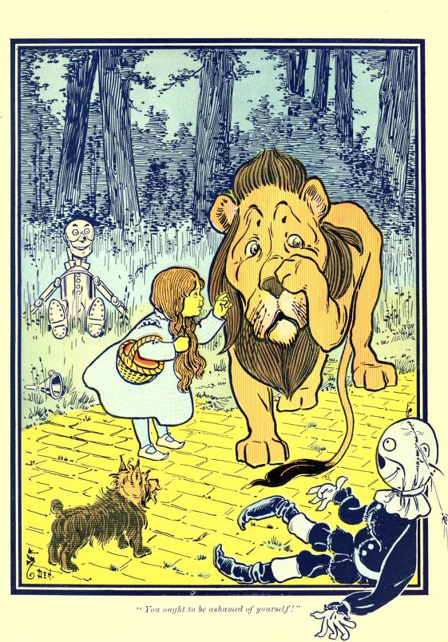
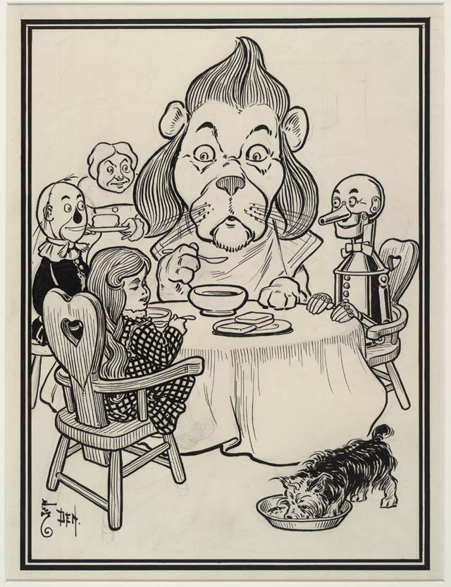

She was awakened by a shock, so sudden and severe that if Dorothy had not been lying on the soft bed she might have been hurt. As it was, the jar made her catch her breath and wonder what had happened; and Toto put his cold little nose into her face and whined dismally. Dorothy sat up and noticed that the house was not moving; nor was it dark, for the bright sunshine came in at the window, flooding the little room. She sprang from her bed and with Toto at her heels ran and opened the door.
The little girl gave a cry of amazement and looked about her, her eyes growing bigger and bigger at the wonderful sights she saw.